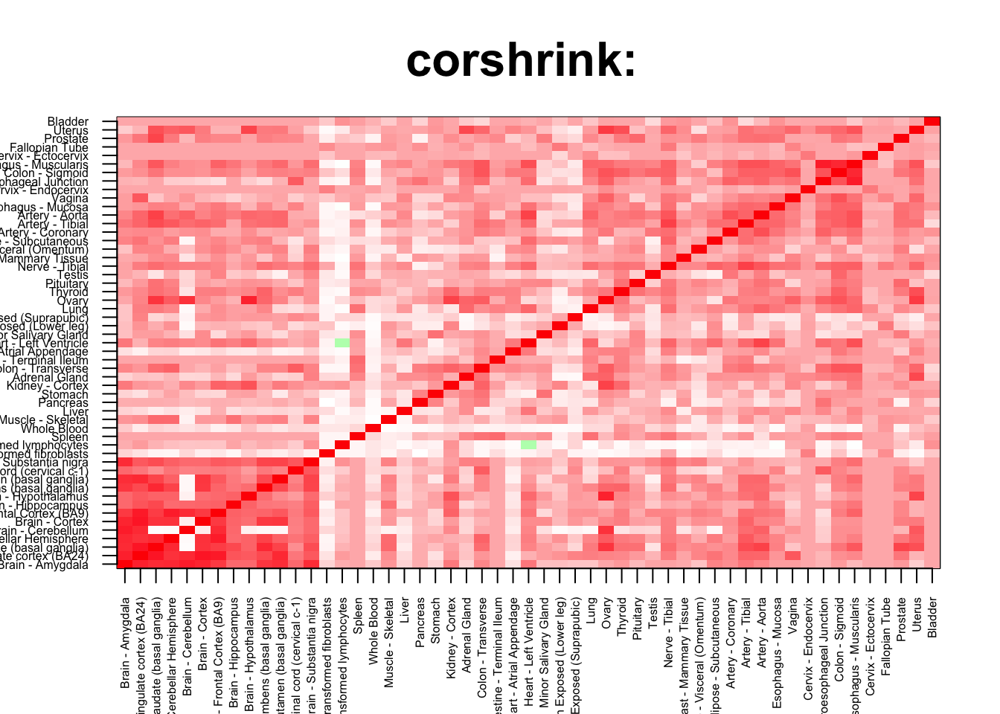

Non-brain/ Non-brain and Brain-Nonbrain
tab <- array(0, dim(corshrink_data)[3])
for(m in 1:dim(corshrink_data)[3]){
temp <- corshrink_data[order_index[-(1:13)], order_index[(1:13)],m]
temp1 <- corshrink_data[order_index[-(1:13)], order_index[-(1:13)],m]
temp_pooled <- c(c(temp), temp1[row(temp1) > col(temp1)])
tab[m] <- (quantile(temp_pooled, 0.7))
}
ordering_high <- order(tab, decreasing = TRUE)[1:1000]
ordering_low <- order(tab, decreasing = FALSE)[1:1000]top_gene <- gene_names_1[ordering_high[1]]
col=c(rev(rgb(seq(1,0,length=1000),1,seq(1,0,length=1000))),
rgb(1,seq(1,0,length=1000),seq(1,0,length=1000)))
image(as.matrix(corshrink_data[order_index,order_index, ordering_high[1000]]),
col=col, main=paste0("corshrink: "), cex.main=2,
xaxt = "n", yaxt = "n", zlim=c(-1,1))
axis(1, at = seq(0, 1, length.out = 53), labels = U[order_index], las=2, cex.axis = 0.5)
axis(2, at = seq(0, 1, length.out = 53), labels = U[order_index], las=2, cex.axis = 0.5)
bottom_gene <- gene_names_1[ordering_low[1]]
col=c(rev(rgb(seq(1,0,length=1000),1,seq(1,0,length=1000))),
rgb(1,seq(1,0,length=1000),seq(1,0,length=1000)))
image(as.matrix(corshrink_data[order_index,order_index, ordering_low[1000]]),
col=col, main=paste0("corshrink: "), cex.main=2,
xaxt = "n", yaxt = "n", zlim=c(-1,1))
axis(1, at = seq(0, 1, length.out = 53), labels = U[order_index], las=2, cex.axis = 0.5)
axis(2, at = seq(0, 1, length.out = 53), labels = U[order_index], las=2, cex.axis = 0.5)
high_non_brain_genes <- gene_names_1[ordering_high]
low_non_brain_genes <- gene_names_1[ordering_low]
write.table(cbind.data.frame(high_non_brain_genes), quote = FALSE, file = "../utilities/non_brain/high_non_brain.txt", row.names = FALSE, col.names = FALSE)
write.table(cbind.data.frame(low_non_brain_genes), quote = FALSE, file = "../utilities/non_brain/low_non_brain.txt", row.names = FALSE, col.names = FALSE)tab <- read.delim("../utilities/non_brain/pathway_high.tab")
head(cbind.data.frame(tab$pathway, tab$q.value), 100)## tab$pathway
## 1 Herpes simplex infection - Homo sapiens (human)
## 2 BMAL1:CLOCK,NPAS2 activates circadian gene expression
## 3 Circadian Clock
## 4 BMAL1-CLOCK,NPAS2 activates circadian gene expression
## 5 Graft-versus-host disease - Homo sapiens (human)
## 6 HSF1 activation
## 7 Antigen processing and presentation - Homo sapiens (human)
## 8 glutathione-mediated detoxification
## 9 Type I diabetes mellitus - Homo sapiens (human)
## 10 Allograft rejection - Homo sapiens (human)
## 11 Attenuation phase
## 12 Inflammatory bowel disease (IBD) - Homo sapiens (human)
## 13 Allograft Rejection
## 14 Staphylococcus aureus infection - Homo sapiens (human)
## 15 Influenza A - Homo sapiens (human)
## 16 Cellular response to heat stress
## 17 HSF1-dependent transactivation
## 18 Th17 cell differentiation - Homo sapiens (human)
## 19 Autoimmune thyroid disease - Homo sapiens (human)
## 20 il 6 signaling pathway
## 21 Nuclear Receptors Meta-Pathway
## 22 Folate metabolism
## 23 Metabolism
## 24 Viral myocarditis - Homo sapiens (human)
## 25 Intestinal immune network for IgA production - Homo sapiens (human)
## 26 Circadian rhythm pathway
## 27 Immune System
## 28 Exercise-induced Circadian Regulation
## 29 <i>S</i>-methyl-5-thio-α-D-ribose 1-phosphate degradation
## 30 <i>S</i>-methyl-5-thio-α-D-ribose 1-phosphate degradation
## 31 Biological oxidations
## 32 Cellular responses to stress
## 33 Epstein-Barr virus infection - Homo sapiens (human)
## 34 Hematopoietic cell lineage - Homo sapiens (human)
## 35 Glutathione conjugation
## 36 Circadian Clock
## 37 Regulation of HSF1-mediated heat shock response
## 38 Chemical carcinogenesis - Homo sapiens (human)
## 39 Melatonin metabolism and effects
## 40 Circadian rhythm - Homo sapiens (human)
## 41 Asthma - Homo sapiens (human)
## 42 RORA activates gene expression
## 43 HTLV-I infection - Homo sapiens (human)
## 44 Metallothioneins bind metals
## 45 Response to metal ions
## 46 Scavenging of heme from plasma
## 47 Phase II conjugation
## 48 Translocation of ZAP-70 to Immunological synapse
## 49 hemoglobins chaperone
## 50 Endosomal/Vacuolar pathway
## 51 Methionine salvage pathway
## 52 JAK STAT MolecularVariation 2
## 53 Oncostatin M Signaling Pathway
## 54 Neutrophil degranulation
## 55 Zinc homeostasis
## 56 Phosphorylation of CD3 and TCR zeta chains
## 57 Folate Metabolism
## 58 il 4 signaling pathway
## 59 Aryl hydrocarbon receptor signalling
## 60 PD-1 signaling
## 61 Cellular response to heat stress
## 62 IL-4 Signaling Pathway
## 63 Binding and Uptake of Ligands by Scavenger Receptors
## 64 Association of TriC/CCT with target proteins during biosynthesis
## 65 NRF2 pathway
## 66 Legionellosis - Homo sapiens (human)
## 67 Metabolism of xenobiotics by cytochrome P450 - Homo sapiens (human)
## 68 Nicotinate and nicotinamide metabolism - Homo sapiens (human)
## 69 NOD-like receptor signaling pathway - Homo sapiens (human)
## 70 Oxidative Stress
## 71 MHC class II antigen presentation
## 72 Erythrocytes take up oxygen and release carbon dioxide
## 73 Glucocorticoid Pathway (Peripheral Tissue), Pharmacodynamics
## 74 ISG15 antiviral mechanism
## 75 Antiviral mechanism by IFN-stimulated genes
## 76 Hepatitis C - Homo sapiens (human)
## 77 Measles - Homo sapiens (human)
## 78 Hydrolysis of LPE
## 79 dolichol and dolichyl phosphate biosynthesis
## 80 Interconversion of 2-oxoglutarate and 2-hydroxyglutarate
## 81 One carbon pool by folate - Homo sapiens (human)
## 82 Metapathway biotransformation
## 83 JAK STAT MolecularVariation 1
## 84 RORA activates gene expression
## 85 Mammary gland development pathway - Involution (Stage 4 of 4)
## 86 Folding of actin by CCT/TriC
## 87 methionine salvage cycle III
## 88 Toxoplasmosis - Homo sapiens (human)
## 89 Malaria - Homo sapiens (human)
## 90 Selenium Micronutrient Network
## 91 Photodynamic therapy-induced AP-1 survival signaling.
## 92 apoptotic dna-fragmentation and tissue homeostasis
## 93 The role of GTSE1 in G2/M progression after G2 checkpoint
## 94 Interleukin-6 signaling
## 95 Nicotinamide salvaging
## 96 Leukotriene metabolism
## 97 Nicotinate metabolism
## 98 Vitamin B12 Metabolism
## 99 Generation of second messenger molecules
## 100 Mineral absorption - Homo sapiens (human)
## tab$q.value
## 1 3.095193e-07
## 2 3.786014e-07
## 3 2.449458e-05
## 4 2.968287e-05
## 5 3.488185e-05
## 6 3.488185e-05
## 7 3.488185e-05
## 8 4.045300e-05
## 9 5.102198e-05
## 10 1.166265e-04
## 11 1.504488e-04
## 12 2.953775e-04
## 13 3.625914e-04
## 14 3.625914e-04
## 15 3.914095e-04
## 16 6.033874e-04
## 17 7.091344e-04
## 18 1.129840e-03
## 19 1.217954e-03
## 20 1.360954e-03
## 21 1.447347e-03
## 22 1.447347e-03
## 23 1.447347e-03
## 24 2.380124e-03
## 25 3.019546e-03
## 26 3.151431e-03
## 27 3.151431e-03
## 28 3.151431e-03
## 29 3.729883e-03
## 30 3.729883e-03
## 31 3.729883e-03
## 32 3.729883e-03
## 33 3.729883e-03
## 34 4.343389e-03
## 35 4.343389e-03
## 36 4.378705e-03
## 37 4.397509e-03
## 38 4.748251e-03
## 39 5.190281e-03
## 40 6.016431e-03
## 41 6.016431e-03
## 42 6.607211e-03
## 43 7.564721e-03
## 44 7.699431e-03
## 45 7.699431e-03
## 46 7.699431e-03
## 47 7.784448e-03
## 48 9.276462e-03
## 49 9.989741e-03
## 50 9.989741e-03
## 51 1.063941e-02
## 52 1.427486e-02
## 53 1.427486e-02
## 54 1.442280e-02
## 55 1.470265e-02
## 56 1.471515e-02
## 57 1.471515e-02
## 58 1.567359e-02
## 59 1.573543e-02
## 60 1.679035e-02
## 61 1.917321e-02
## 62 1.917321e-02
## 63 1.933681e-02
## 64 1.933681e-02
## 65 1.980115e-02
## 66 2.011416e-02
## 67 2.441767e-02
## 68 2.483723e-02
## 69 2.796616e-02
## 70 2.824833e-02
## 71 2.836582e-02
## 72 2.917919e-02
## 73 2.917919e-02
## 74 3.067070e-02
## 75 3.067070e-02
## 76 3.179452e-02
## 77 3.420018e-02
## 78 3.420018e-02
## 79 3.420018e-02
## 80 3.420018e-02
## 81 3.420018e-02
## 82 3.420018e-02
## 83 3.420018e-02
## 84 3.420018e-02
## 85 3.420018e-02
## 86 3.420018e-02
## 87 3.420018e-02
## 88 3.595408e-02
## 89 4.037667e-02
## 90 4.114864e-02
## 91 4.211059e-02
## 92 4.211059e-02
## 93 4.211059e-02
## 94 4.211059e-02
## 95 4.211059e-02
## 96 4.252123e-02
## 97 4.252123e-02
## 98 4.491069e-02
## 99 4.559492e-02
## 100 4.852011e-02tab <- read.delim("../utilities/non_brain/GO_high.tab")
head(cbind.data.frame(tab$term_name, tab$q.value), 100)## tab$term_name
## 1 type I interferon signaling pathway
## 2 response to type I interferon
## 3 MHC protein complex
## 4 cellular response to cytokine stimulus
## 5 interferon-gamma-mediated signaling pathway
## 6 response to cytokine
## 7 cytokine-mediated signaling pathway
## 8 response to interferon-gamma
## 9 lumenal side of endoplasmic reticulum membrane
## 10 integral component of lumenal side of endoplasmic reticulum membrane
## 11 xenobiotic catabolic process
## 12 response to biotic stimulus
## 13 response to external biotic stimulus
## 14 response to other organism
## 15 peptide antigen binding
## 16 innate immune response
## 17 response to virus
## 18 response to stress
## 19 nitrobenzene metabolic process
## 20 defense response
## 21 transferase activity, transferring one-carbon groups
## 22 methyltransferase activity
## 23 cytokine production
## 24 defense response to other organism
## 25 response to temperature stimulus
## 26 MHC class II protein complex
## 27 intracellular membrane-bounded organelle
## 28 cytoplasmic part
## 29 adaptive immune response based on somatic recombination of immune receptors built from immunoglobulin superfamily domains
## 30 response to heat
## 31 immune effector process
## 32 RAGE receptor binding
## 33 amide binding
## 34 defense response to virus
## 35 immune response
## 36 cellular modified amino acid metabolic process
## 37 hemoglobin complex
## 38 response to organic substance
## 39 cellular detoxification of nitrogen compound
## 40 haptoglobin binding
## 41 circadian rhythm
## 42 viral genome replication
## 43 glutathione derivative metabolic process
## 44 glutathione derivative biosynthetic process
## 45 oxygen transporter activity
## 46 ER to Golgi transport vesicle membrane
## 47 nitrogen compound metabolic process
## 48 unfolded protein binding
## 49 cellular detoxification
## 50 regulation of cytokine production
## 51 protein folding
## 52 benzene-containing compound metabolic process
## 53 glutathione transferase activity
## 54 interferon-gamma production
## 55 cellular response to chemical stimulus
## 56 negative regulation of viral process
## 57 haptoglobin-hemoglobin complex
## 58 peptidyl-lysine 5-dioxygenase activity
## 59 endocytic vesicle lumen
## 60 intracellular
## 61 oxygen binding
## 62 negative regulation of multi-organism process
## 63 condensed chromosome
## 64 positive regulation of cytokine production
## 65 T cell mediated immunity
## 66 cellular response to organic substance
## 67 organic acid biosynthetic process
## 68 carboxylic acid biosynthetic process
## 69 adaptive immune response
## 70 cellular aromatic compound metabolic process
## 71 membrane-bounded organelle
## 72 intracellular part
## 73 peptide binding
## 74 gas transport
## 75 glutathione binding
## 76 MHC class II receptor activity
## 77 MHC class I protein complex
## 78 coenzyme biosynthetic process
## 79 alpha-amino acid biosynthetic process
## 80 antigen binding
## 81 cytosol
## 82 detoxification of nitrogen compound
## 83 purine deoxyribonucleotide binding
## 84 carboxylic acid metabolic process
## 85 viral process
## 86 response to toxic substance
## 87 multi-organism cellular process
## 88 circadian regulation of gene expression
## 89 methylation
## 90 organic cyclic compound metabolic process
## 91 oligopeptide binding
## 92 S-adenosylmethionine-dependent methyltransferase activity
## 93 response to zinc ion
## 94 regulation of defense response
## 95 cytokine production involved in immune response
## 96 symbiosis, encompassing mutualism through parasitism
## 97 production of molecular mediator of immune response
## 98 interspecies interaction between organisms
## 99 cellular response to heat
## 100 cellular nitrogen compound metabolic process
## tab$q.value
## 1 1.311879e-09
## 2 1.669568e-09
## 3 3.260976e-07
## 4 6.998818e-07
## 5 6.998818e-07
## 6 3.330837e-06
## 7 4.052414e-06
## 8 1.835313e-06
## 9 1.366205e-05
## 10 5.273073e-06
## 11 3.323342e-05
## 12 1.421170e-05
## 13 7.665378e-05
## 14 3.564091e-05
## 15 2.650560e-05
## 16 9.856120e-05
## 17 5.882373e-05
## 18 3.405085e-05
## 19 1.040340e-04
## 20 1.514947e-04
## 21 1.175014e-04
## 22 4.115101e-04
## 23 2.587482e-04
## 24 5.075211e-04
## 25 2.723601e-04
## 26 1.037054e-04
## 27 2.697783e-04
## 28 2.697783e-04
## 29 8.614094e-04
## 30 4.090222e-04
## 31 2.923833e-04
## 32 6.744135e-04
## 33 4.831787e-04
## 34 5.921564e-04
## 35 3.526791e-04
## 36 6.839641e-04
## 37 4.795041e-04
## 38 7.562391e-04
## 39 9.392583e-04
## 40 1.076814e-03
## 41 6.005467e-04
## 42 3.242457e-03
## 43 1.162272e-03
## 44 3.242457e-03
## 45 1.170581e-03
## 46 2.183877e-03
## 47 7.244336e-04
## 48 1.170581e-03
## 49 7.244336e-04
## 50 4.443384e-03
## 51 7.244336e-04
## 52 4.443384e-03
## 53 3.286562e-03
## 54 4.666577e-03
## 55 2.454707e-03
## 56 7.270903e-03
## 57 2.482254e-03
## 58 9.798370e-03
## 59 1.390691e-03
## 60 4.309841e-03
## 61 2.518295e-03
## 62 6.942035e-03
## 63 1.390691e-03
## 64 8.620714e-03
## 65 8.620714e-03
## 66 7.275309e-03
## 67 7.275309e-03
## 68 8.620714e-03
## 69 4.079407e-03
## 70 4.079407e-03
## 71 4.309841e-03
## 72 4.309841e-03
## 73 3.879543e-03
## 74 9.523581e-03
## 75 3.879543e-03
## 76 7.129331e-03
## 77 2.060171e-03
## 78 1.206719e-02
## 79 1.206719e-02
## 80 3.613124e-03
## 81 8.789472e-03
## 82 2.702460e-03
## 83 7.129331e-03
## 84 1.206719e-02
## 85 6.221757e-03
## 86 6.221757e-03
## 87 2.702460e-03
## 88 6.249708e-03
## 89 2.702460e-03
## 90 6.249708e-03
## 91 7.654822e-03
## 92 1.553523e-02
## 93 1.353664e-02
## 94 1.353664e-02
## 95 6.475022e-03
## 96 6.475022e-03
## 97 2.927682e-03
## 98 2.927682e-03
## 99 1.677531e-02
## 100 6.918622e-03tab <- read.delim("../utilities/non_brain/pathway_low.tab")
head(cbind.data.frame(tab$pathway, tab$q.value), 100)## tab$pathway
## 1 Developmental Biology
## 2 Arrhythmogenic Right Ventricular Cardiomyopathy
## 3 Dilated cardiomyopathy - Homo sapiens (human)
## 4 Extracellular matrix organization
## 5 Smooth Muscle Contraction
## 6 Integrin
## 7 Myometrial Relaxation and Contraction Pathways
## 8 Arrhythmogenic right ventricular cardiomyopathy (ARVC) - Homo sapiens (human)
## 9 Primary Focal Segmental Glomerulosclerosis FSGS
## 10 Hypertrophic cardiomyopathy (HCM) - Homo sapiens (human)
## 11 Muscle contraction
## 12 EGFR1
## 13 Axon guidance
## 14 Netrin-1 signaling
## 15 Striated Muscle Contraction
## 16 Keratinization
## 17 Cell-Cell communication
## 18 Focal adhesion - Homo sapiens (human)
## 19 Proteoglycans in cancer - Homo sapiens (human)
## 20 EPHA-mediated growth cone collapse
## 21 Tight junction - Homo sapiens (human)
## 22 Elastic fibre formation
## 23 Vascular smooth muscle contraction - Homo sapiens (human)
## 24 Regulation of actin cytoskeleton - Homo sapiens (human)
## 25 EPH-Ephrin signaling
## 26 Beta5 beta6 beta7 and beta8 integrin cell surface interactions
## 27 Beta-catenin independent WNT signaling
## 28 ECM-receptor interaction - Homo sapiens (human)
## 29 Semaphorin interactions
## 30 Wnt
## 31 Focal Adhesion
## 32 Non-integrin membrane-ECM interactions
## 33 Molecules associated with elastic fibres
## 34 Cell junction organization
## 35 Reversible hydration of carbon dioxide
## 36 Cell adhesion molecules (CAMs) - Homo sapiens (human)
## 37 Validated transcriptional targets of deltaNp63 isoforms
## 38 Striated Muscle Contraction
## 39 Calcium Regulation in the Cardiac Cell
## 40 Sema4D induced cell migration and growth-cone collapse
## 41 Association Between Physico-Chemical Features and Toxicity Associated Pathways
## 42 Hypothesized Pathways in Pathogenesis of Cardiovascular Disease
## 43 Beta-agonist/Beta-blocker Pathway, Pharmacodynamics
## 44 DCC mediated attractive signaling
## 45 Platelet activation, signaling and aggregation
## 46 Integrin cell surface interactions
## 47 Beta1 integrin cell surface interactions
## 48 Axon guidance - Homo sapiens (human)
## 49 Transport of connexons to the plasma membrane
## 50 alanine biosynthesis/degradation
## 51 Sema4D in semaphorin signaling
## 52 Antiarrhythmic Pathway, Pharmacodynamics
## 53 Ca2+ pathway
## 54 Regulation of lipolysis in adipocytes - Homo sapiens (human)
## 55 Validated transcriptional targets of TAp63 isoforms
## 56 Alpha6Beta4Integrin
## 57 Adherens junction - Homo sapiens (human)
## 58 Nitrogen metabolism - Homo sapiens (human)
## 59 NOTCH1 regulation of human endothelial cell calcification
## 60 Hemostasis
## 61 Collagen formation
## 62 cGMP effects
## 63 TarBasePathway
## 64 EPH-ephrin mediated repulsion of cells
## 65 Rap1 signaling pathway - Homo sapiens (human)
## 66 Signaling by Wnt
## 67 miR-targeted genes in muscle cell - TarBase
## 68 Other semaphorin interactions
## 69 a6b1 and a6b4 Integrin signaling
## 70 Ephrin A reverse signaling
## 71 Transport of connexins along the secretory pathway
## 72 Oligomerization of connexins into connexons
## 73 Gap junction assembly
## 74 Syndecan interactions
## 75 Hormone-sensitive lipase (HSL)-mediated triacylglycerol hydrolysis
## 76 Netrin mediated repulsion signals
## 77 Netrin-mediated signaling events
## 78 Wnt Canonical
## 79 Wnt Mammals
## 80 Assembly of collagen fibrils and other multimeric structures
## 81 Wnt Signaling Pathway and Pluripotency
## 82 Wnt Signaling Pathway
## 83 TGF-beta signaling pathway - Homo sapiens (human)
## 84 Wnt signaling pathway - Homo sapiens (human)
## 85 Apoptotic cleavage of cell adhesion proteins
## 86 PPAR signaling pathway
## 87 Focal Adhesion-PI3K-Akt-mTOR-signaling pathway
## 88 Signal Transduction
## 89 Laminin interactions
## 90 RHO GTPases activate PAKs
## 91 MFAP5-mediated ovarian cancer cell motility and invasiveness
## 92 Formation of the cornified envelope
## 93 Posttranslational regulation of adherens junction stability and dissassembly
## 94 Lipid digestion, mobilization, and transport
## 95 Proteoglycan syndecan-mediated signaling events
## 96 hop pathway in cardiac development
## 97 Apoptotic cleavage of cellular proteins
## 98 regulation of ck1/cdk5 by type 1 glutamate receptors
## 99 Nitric oxide stimulates guanylate cyclase
## 100 G Protein Signaling Pathways
## tab$q.value
## 1 0.0001239643
## 2 0.0001239643
## 3 0.0001239643
## 4 0.0001263826
## 5 0.0001263826
## 6 0.0001289889
## 7 0.0001289889
## 8 0.0001688280
## 9 0.0001748006
## 10 0.0005429774
## 11 0.0005429774
## 12 0.0005429774
## 13 0.0006323074
## 14 0.0007816168
## 15 0.0009000970
## 16 0.0012787560
## 17 0.0018242384
## 18 0.0018242384
## 19 0.0023979243
## 20 0.0027538463
## 21 0.0029520113
## 22 0.0029520113
## 23 0.0029520113
## 24 0.0031299935
## 25 0.0041639311
## 26 0.0041639311
## 27 0.0046201710
## 28 0.0056534847
## 29 0.0056534847
## 30 0.0061347635
## 31 0.0062753823
## 32 0.0068188924
## 33 0.0068188924
## 34 0.0078707585
## 35 0.0092702448
## 36 0.0101630376
## 37 0.0124443582
## 38 0.0139413765
## 39 0.0139413765
## 40 0.0156340815
## 41 0.0167829243
## 42 0.0177112102
## 43 0.0177112102
## 44 0.0177112102
## 45 0.0177112102
## 46 0.0177112102
## 47 0.0177112102
## 48 0.0177112102
## 49 0.0178516171
## 50 0.0178516171
## 51 0.0216295556
## 52 0.0228267522
## 53 0.0228267522
## 54 0.0234498205
## 55 0.0234498205
## 56 0.0234498205
## 57 0.0234498205
## 58 0.0234498205
## 59 0.0234498205
## 60 0.0234498205
## 61 0.0275996110
## 62 0.0275996110
## 63 0.0275996110
## 64 0.0282611302
## 65 0.0283369177
## 66 0.0289916862
## 67 0.0309101950
## 68 0.0316297491
## 69 0.0343552754
## 70 0.0350076601
## 71 0.0350076601
## 72 0.0350076601
## 73 0.0350076601
## 74 0.0350076601
## 75 0.0350076601
## 76 0.0359582319
## 77 0.0363443833
## 78 0.0363648958
## 79 0.0363648958
## 80 0.0369195129
## 81 0.0405149866
## 82 0.0427447345
## 83 0.0432301103
## 84 0.0432301103
## 85 0.0432301103
## 86 0.0482138444
## 87 0.0494664767
## 88 0.0495676651
## 89 0.0496674046
## 90 0.0496674046
## 91 0.0524205379
## 92 0.0524205379
## 93 0.0524205379
## 94 0.0534592555
## 95 0.0534592555
## 96 0.0534592555
## 97 0.0534592555
## 98 0.0534592555
## 99 0.0592524521
## 100 0.0592524521tab <- read.delim("../utilities/non_brain/GO_low.tab")
head(cbind.data.frame(tab$term_name, tab$q.value), 100)## tab$term_name
## 1 anatomical structure morphogenesis
## 2 actin cytoskeleton
## 3 anatomical structure development
## 4 cytoskeletal protein binding
## 5 single-organism developmental process
## 6 system development
## 7 actin filament-based process
## 8 tissue development
## 9 regulation of multicellular organismal process
## 10 multicellular organism development
## 11 single-multicellular organism process
## 12 protein binding
## 13 single-organism cellular process
## 14 cellular developmental process
## 15 actin binding
## 16 cell differentiation
## 17 cytoskeleton organization
## 18 cell development
## 19 regulation of developmental process
## 20 cell periphery
## 21 contractile fiber
## 22 muscle system process
## 23 animal organ development
## 24 actin cytoskeleton organization
## 25 regulation of cell differentiation
## 26 contractile fiber part
## 27 movement of cell or subcellular component
## 28 regulation of multicellular organismal development
## 29 regulation of cell projection organization
## 30 plasma membrane
## 31 vesicle
## 32 supramolecular polymer
## 33 cell communication
## 34 regulation of localization
## 35 regulation of nervous system development
## 36 single organism signaling
## 37 myofibril
## 38 cell adhesion
## 39 regulation of cell development
## 40 supramolecular fiber
## 41 muscle contraction
## 42 cell-cell junction
## 43 muscle structure development
## 44 regulation of cell communication
## 45 I band
## 46 anchoring junction
## 47 regulation of cellular component organization
## 48 regulation of cellular component movement
## 49 sarcomere
## 50 tissue morphogenesis
## 51 positive regulation of cell differentiation
## 52 regulation of signaling
## 53 cytoskeleton
## 54 cellular component morphogenesis
## 55 cell motility
## 56 localization of cell
## 57 cell migration
## 58 plasma membrane part
## 59 regulation of cell motility
## 60 regulation of cell morphogenesis
## 61 cell junction organization
## 62 cell surface receptor signaling pathway
## 63 extracellular exosome
## 64 regulation of locomotion
## 65 adherens junction
## 66 extracellular vesicle
## 67 extracellular organelle
## 68 neurogenesis
## 69 neuron part
## 70 supramolecular fiber organization
## 71 positive regulation of developmental process
## 72 actomyosin structure organization
## 73 actomyosin
## 74 Z disc
## 75 regulation of system process
## 76 enzyme linked receptor protein signaling pathway
## 77 heart development
## 78 signal transduction
## 79 regulation of anatomical structure morphogenesis
## 80 protein complex binding
## 81 circulatory system development
## 82 extracellular matrix organization
## 83 cell projection organization
## 84 cellular response to transforming growth factor beta stimulus
## 85 anatomical structure formation involved in morphogenesis
## 86 extracellular structure organization
## 87 tissue migration
## 88 neuron differentiation
## 89 cell morphogenesis
## 90 structural constituent of muscle
## 91 plasma membrane region
## 92 response to transforming growth factor beta
## 93 nervous system development
## 94 cell projection
## 95 cytoplasm
## 96 animal organ morphogenesis
## 97 regulation of signal transduction
## 98 cell-cell adhesion
## 99 negative regulation of developmental process
## 100 contractile actin filament bundle
## tab$q.value
## 1 1.607937e-16
## 2 9.344338e-17
## 3 1.607937e-16
## 4 1.141925e-15
## 5 8.168972e-16
## 6 3.213350e-14
## 7 1.825066e-13
## 8 1.825066e-13
## 9 2.580669e-13
## 10 3.193331e-13
## 11 1.913887e-13
## 12 6.399548e-13
## 13 4.435346e-13
## 14 3.341280e-12
## 15 1.137086e-11
## 16 4.111588e-11
## 17 4.111588e-11
## 18 7.140839e-12
## 19 7.599187e-12
## 20 1.190423e-11
## 21 1.868831e-11
## 22 8.736330e-12
## 23 1.660644e-11
## 24 1.304430e-10
## 25 1.334681e-10
## 26 2.992867e-11
## 27 3.255886e-11
## 28 1.339619e-10
## 29 5.735034e-10
## 30 4.106629e-11
## 31 2.969389e-10
## 32 5.818500e-11
## 33 5.196547e-11
## 34 1.766229e-10
## 35 1.833032e-09
## 36 8.441602e-11
## 37 1.562423e-10
## 38 1.059818e-10
## 39 2.703991e-09
## 40 1.083567e-09
## 41 2.526663e-09
## 42 6.847170e-10
## 43 1.551660e-09
## 44 5.166594e-09
## 45 3.404872e-09
## 46 1.305176e-09
## 47 9.274922e-09
## 48 9.274922e-09
## 49 3.404872e-09
## 50 3.831762e-09
## 51 2.311224e-08
## 52 4.460793e-09
## 53 1.359139e-08
## 54 6.686442e-09
## 55 2.247660e-09
## 56 2.247660e-09
## 57 7.546142e-09
## 58 3.986799e-09
## 59 3.055743e-08
## 60 7.555917e-08
## 61 1.544646e-08
## 62 1.683414e-08
## 63 3.354310e-08
## 64 2.093132e-08
## 65 2.410481e-08
## 66 2.410481e-08
## 67 1.184348e-08
## 68 1.479204e-07
## 69 1.393297e-08
## 70 3.805382e-08
## 71 1.641576e-07
## 72 2.334401e-07
## 73 8.662035e-08
## 74 5.841185e-08
## 75 2.375357e-07
## 76 2.934746e-07
## 77 1.174425e-07
## 78 5.975926e-08
## 79 4.096039e-07
## 80 5.326304e-07
## 81 5.977448e-07
## 82 5.977448e-07
## 83 2.378537e-07
## 84 5.977448e-07
## 85 9.934493e-08
## 86 2.378537e-07
## 87 2.378537e-07
## 88 1.189308e-06
## 89 6.228466e-07
## 90 2.895203e-07
## 91 1.297127e-07
## 92 2.908163e-07
## 93 7.039763e-07
## 94 1.403250e-07
## 95 3.038837e-07
## 96 3.752879e-07
## 97 9.286393e-07
## 98 4.291539e-07
## 99 1.223190e-06
## 100 4.190082e-07